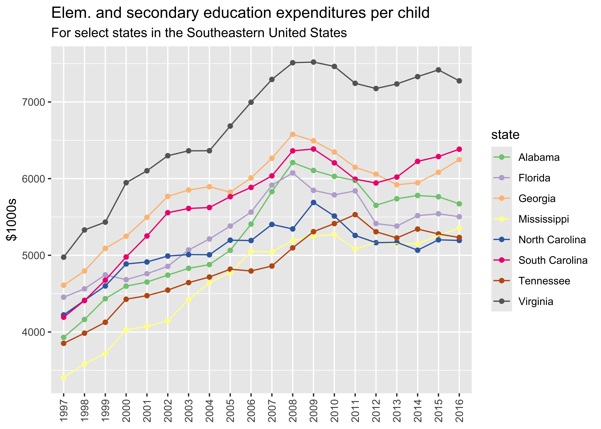

The not-for-profit organization the Urban Institute created an incredible dataset on State-by-State Spending on Kids that is available here. This data package provides this dataset through R. It is formatted as tidy data to facilitate analysis within the tidyverse suite of R packages.
You can install {tidykids} only from GitHub with:
remotes::install_github("jrosen48/tidykids")First, load the {tidykids} package:
Then, type tidykids to load the data:
tidykids
#> # A tibble: 23,460 × 6
#> state expenditure year raw inf_adj inf_adj_perchild
#> <chr> <chr> <chr> <dbl> <dbl> <dbl>
#> 1 Alabama PK12ed 1997 3271969 4665308. 3929.
#> 2 Alaska PK12ed 1997 1042311 1486170 7548.
#> 3 Arizona PK12ed 1997 3388165 4830986. 3707.
#> 4 Arkansas PK12ed 1997 1960613 2795523 3891.
#> 5 California PK12ed 1997 28708364 40933568 4282.
#> 6 Colorado PK12ed 1997 3332994 4752320. 4380.
#> 7 Connecticut PK12ed 1997 4014870 5724568. 6697.
#> 8 Delaware PK12ed 1997 776825 1107629. 5625.
#> 9 District of Columbia PK12ed 1997 544051 775730. 6105.
#> 10 Florida PK12ed 1997 11498394 16394885 4454.
#> # ℹ 23,450 more rowsNote that:
state refers to the United States state (including the District of Columbia)year refers to the yearraw refers to the raw amount spentinf_adj refers to the amount transformed to be in 2016 dollars for each year spentinf_adj_per_child refers to the amount transformed to be in 2016 dollars for each year per child in $1000s spentDetailed descriptions of the expenditures in the dataset (see the expenditure column) are available in the tidykids-codebook vignette.
The data can prepared for other analyses or be visualized, as below:
library(dplyr, warn.conflicts = FALSE)
library(ggplot2)
tidykids %>%
filter(expenditure %in% c("PK12ed"),
state %in% c("Alabama", "Florida", "Georgia", "Mississippi", "North Carolina", "South Carolina", "Tennessee", "Virginia")) %>%
ggplot(aes(x = year, y = inf_adj_perchild, color = state, group = state)) +
geom_point() +
geom_line() +
theme(axis.text.x = element_text(angle = 90, vjust = 0.5, hjust=1)) +
scale_color_brewer(type = "qual") +
xlab(NULL) +
ylab("$1000s") +
labs(title = "Elem. and secondary education expenditures per child",
subtitle = "For select states in the Southeastern United States") 
An interactive Shiny web application is available here: https://jmichaelrosenberg.shinyapps.io/tidykidsshiny/
The data was made available by and is attributable to Julia Isaacs, Eleanor Lauderback, and Erica Greenberg under the under the [ODC Attribution License](https://opendatacommons.org/licenses/by/1-0/.